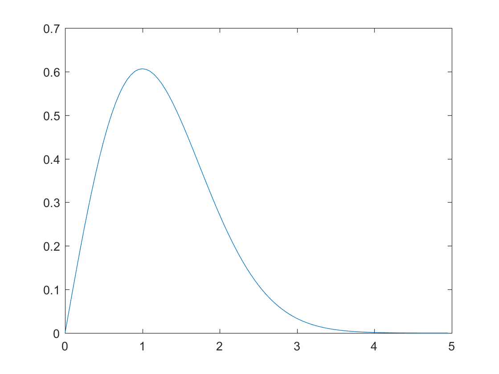

Laboration 1
SF1901 Sannolikhetsteori och statistik, VT 2017 Material fun: hist_density.m plot_mvnpdf.m mat: moore.mat poly.mat resistorer.mat wave_data.mat dat: birth.dat txt: birth.txt
Contents
Förberedelseuppgifter - 1
Definiera likelihood och log-likelihood samt förklara sambandet mellan dessa begrepp. Beskriv idén bakom Minsta-kvadratmetoden (MK) respektive Maximum-likelihoodmetoden (ML). Svar:
Förberedelseuppgifter - 2
En Rayleighfördelad stokastisk variabel X har täthetsfunktionen f = @(x) (x/b^2)*exp((-x^2)/(2*(b^2))); Antag nu att du har n stycken Rayleighfördelade variabler.
clear, clc b = 1; ul = 5; step = ul/100; f = @(x) (x/b^2)*exp((-x^2)/(2*(b^2))); x = 0:step:ul-step; c = zeros(length(x),1); for i = 1:length(x) c(i) = f(x(i)); end plot(x,c) % a) Bestäm ML-skattningen av b. % b) Bestäm MK-skattningen av b.
Förberedelseuppgifter - 3
Beskriv hur du kan ta fram ett approximativt konfidensintervall för parametern b. Motivera varför det är rimligt att göra den approximation som du har gjort. Ledning: Använd MK-skattningen. Svar:
Förberedelseuppgifter - 4
Beskriv idén bakom linjär regression. Förklara vad polynomregression är. Svar:
Förberedelseuppgifter - 5
Beskriv hur man i MATLAB mha kommandot regress kan skatta parametrarna i modellen w = log(y_k) = b0 + b1*x_k + e_k;
Förberedelseuppgifter - 6
Förklara idén bakom bootstrap. Läs sid. 272-273 om bootstrap i läroboken om nödvändigt.